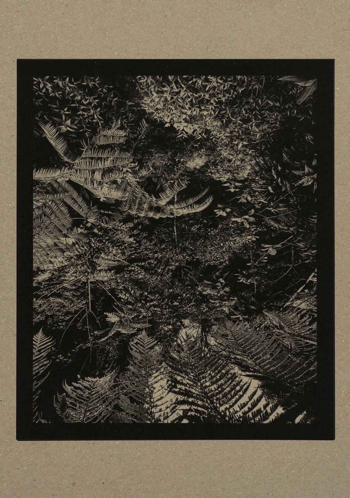

La belleza serena
de lo sencillo.
Luz, emoción y memoria. Imágenes de carácter poético y atemporal, entre Barcelona y Bali.

Descanso



“No fotografío lo extraordinario. Fotografío aquello que solemos pasar por alto.”

Reflejo